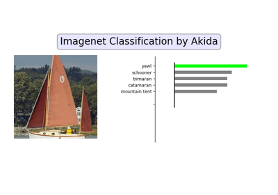
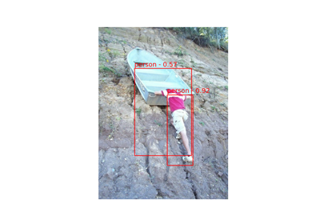
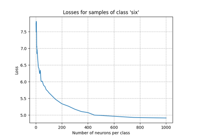

Akida examples
To learn how to use the Akida runtime, the CNN2SNN toolkit and check the Akida processor performance against MNIST, ImageNet and Google Speech Commands (KWS) datasets please refer to the sections below.
General examples


AkidaNet/ImageNet inference

Regression tutorial


YOLO/PASCAL-VOC detection tutorial
YOLO/PASCAL-VOC detection tutorial
CNN2SNN tutorials


Edge examples



Tips to set Akida learning parameters
Tips to set Akida learning parameters